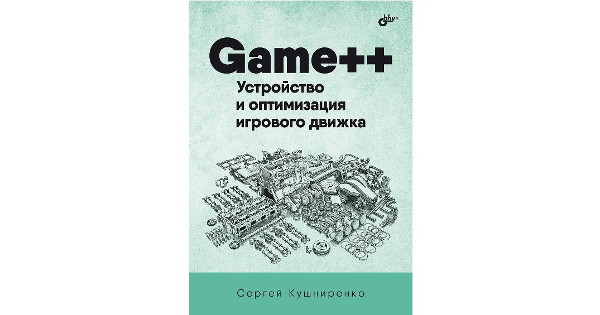
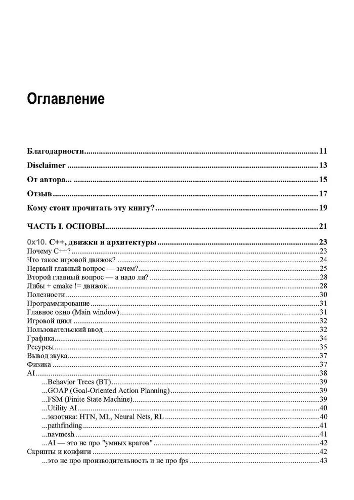
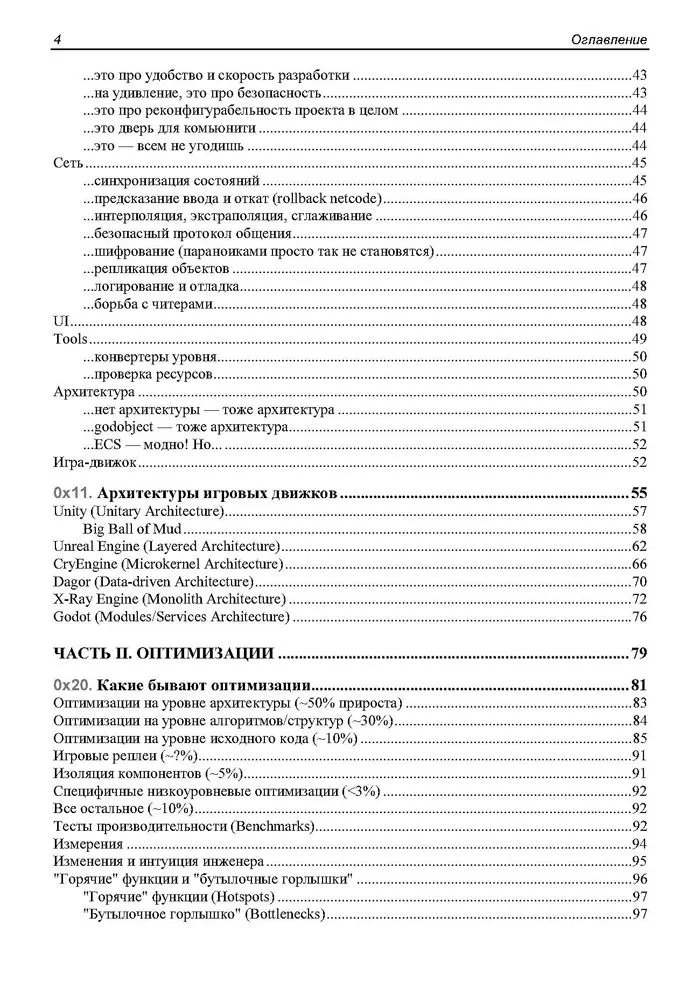
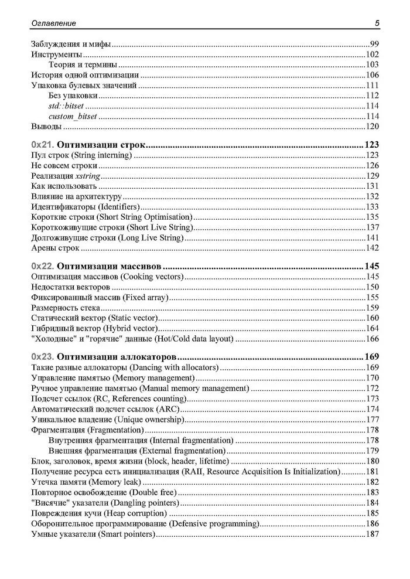
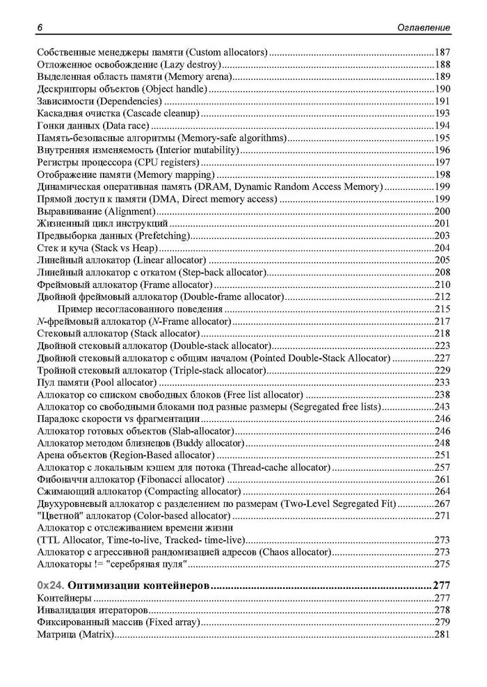
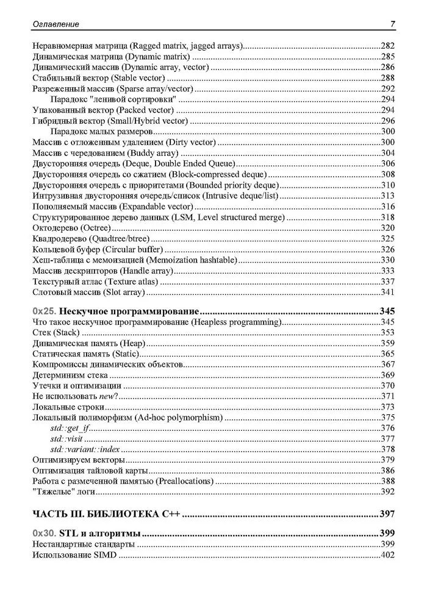
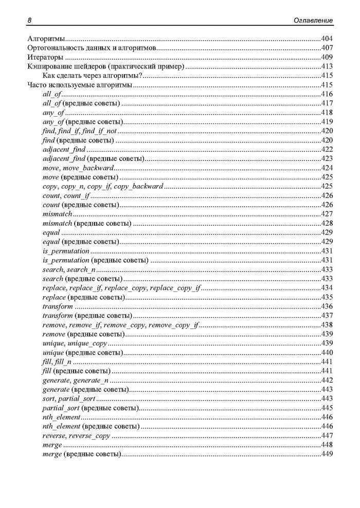
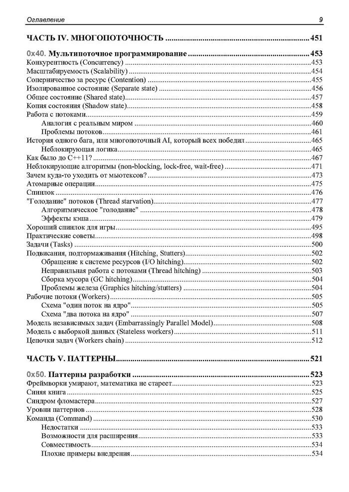
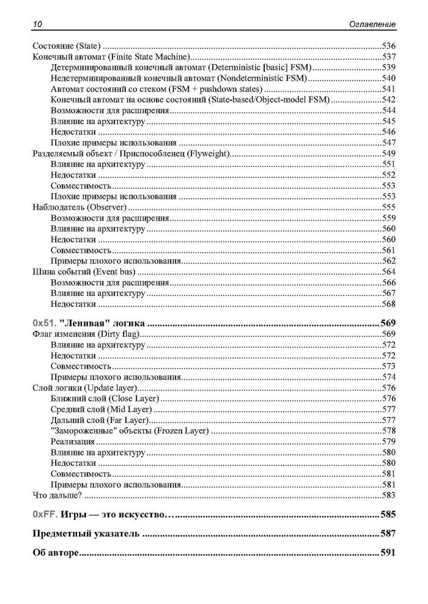

A volte un libro comincia da un singolo articolo pubblicato al momento giusto sul Habr giusto, e nel mio caso tutto è davvero cominciato dal post sugli allocatori che, nonostante l'abbondanza di materiale tecnico, codice e diagrammi, ha ricevuto il maggior numero di voti positivi tra i miei articoli sullo sviluppo C++-affine e gamedev. E poi la serie Game++ stessa è cresciuta gradualmente da riflessioni tecniche separate su C++, architettura dei motori e prestazioni fino a diventare una narrazione coerente. Dietro Game++ c'è materiale ancora più strettamente tecnico nel blog e nella wiki della mia azienda, e sarei felice di condividerlo — e periodicamente lo condivido — ma capisci, non tutto si può pubblicare, e persino di ciò che è pubblicato su Habr, una buona parte è stata spesso tagliata, perché NDA e tecnologie segrete bla-bla-bla. Quell'articolo è stato il momento in cui ho visto che i testi sparsi formano in realtà lo scheletro di un futuro libro; basta smettere di trattarli come «post» e iniziare a vederli come capitoli. L'idea di scrivere un libro non è venuta dal nulla — diverse persone e aziende non collegate tra loro si sono fatte vive proponendo di riscrivere la serie di articoli come libro.
Indice








E nel processo di scrittura degli articoli notavo sempre più che tornavo continuamente sulle stesse domande — cos'è il «buon» C++ in un motore, dove passa il confine tra filosofia e codice di produzione — e a un certo punto è diventato chiaro che il formato articolo non sempre calza e che troppo contesto resta fuori dalle parentesi, troppo spesso devi interrompere una linea di ragionamento perché il testo è già venuto «troppo lungo per Habr»; guardo gli scroll-through e di solito la gente non legge gli articoli oltre i 15 minuti. Il libro è diventato un modo per ampliare sia il volume sia gli esempi e per dare più filosofia.
Per me è particolarmente importante che questo non sia un libro «su un motore di gioco» in senso stretto — puoi prendere il classico di Gregory e lì troverai la teoria necessaria e importante dello sviluppo dei motori. Sì, ho molti esempi tratti dallo sviluppo di motori, dal lavoro con la memoria, i thread, gli allocatori, le stringhe, dalle pratiche di ottimizzazione e dai compromessi architetturali, ma in sostanza è un libro sul C++ come linguaggio delle decisioni ingegneristiche e su come pensare in termini di dati, lifetime e comportamento del codice sull'hardware reale — e il motore qui è solo un ambiente di complessità accentuata, una specie di stress test per il linguaggio, in cui si vede chiaramente dove i concetti funzionano e dove crollano.
Una parte a sé di questa storia sono le persone che sono diventate anch'esse parte del libro — Anatoly Mamaev @Serpentine, che al libro ha regalato la maggior parte dei disegni, Oleg Sivchenko @OlegSivchenko, che ha seguito il lavoro con l'editore BHV, e Leonid Kochin, che ha coraggiosamente curato l'editing ed è entrato in tutto questo mucchio di termini. Con Oleg e Anatoly la comunicazione è andata gradualmente oltre Habr e il libro, verso questioni più generali di cultura ingegneristica e qualità della letteratura tecnica; spero di poterli chiamare miei amici e che la nostra comunicazione non finisca con l'uscita del libro. Non meno preziosa è stata la comunicazione con Andrey Karpov @Andrey2008 — con il suo aiuto e quello dell'azienda PVS sono riuscito a tenere diversi webinar, che si sono rivelati una specie di stress test, perché spiegare le proprie idee a voce, in un formato live in cui il pubblico fa domande e ti coglie sulle imprecisioni, non è testo con immagini. Senza dubbio molti frammenti del libro sono migliorati proprio perché erano stati verbalizzati in questi incontri. E i ragazzi ora aiutano anche con la traduzione del libro in inglese, per cui un grazie a parte — spero vada tutto in porto.
E naturalmente un ringraziamento speciale a Habr e ai lettori, senza di voi nemmeno questo sarebbe accaduto. Di tutto il processo di lavoro, ciò che ricordo di più non è la scrittura in sé — anche se, guardando indietro, raccogliere il materiale ha richiesto una decina d'anni, probabilmente dal momento in cui ho effettivamente iniziato a scrivere documentazione e articoli — ma l'editing, che è un tipo di lavorazione del materiale completamente diverso: raccogliere note sparse, fogli, tovaglioli, file e semplici disegni scritti in anni e stati d'animo diversi, e trovare la logica interna, quella «spina dorsale» su cui il testo si regge e che attraversa tutto il libro. E sì, un libro non è una raccolta di articoli ma una sequenza di idee, in cui ogni capitolo successivo risponde alla domanda posta da quello precedente, e ho dovuto riscrivere molto, buttare via alcune cose, ripensarne altre. Ho anche dovuto uniformare lo stile, perché persino gli articoli scritti da una stessa persona si sono rivelati molto diversi per umore, stile e approccio. Non è stato facile, e ciò che c'è nel libro è in realtà già la quarta iterazione del testo, in alcuni punti riscritto quasi completamente.
Un libro non parte necessariamente da una pagina bianca; a volte parte dalla rielaborazione di lavoro già fatto e dalla domanda «e se questo non fosse solo nulla?» — e magari scoprirai all'improvviso di avere già non solo testi ma una posizione, non solo articoli ma una visione della professione. Sorprendentemente, un tema piuttosto specialistico ha ottenuto una buona risposta su Habr/LinkedIn/social, e sono arrivate molte domande; lascio qui quelle frequenti, forse qualcuno le troverà interessanti:
D: Ci hai lavorato a lungo sul libro?
R: Quasi 10 anni, se conti dal momento della raccolta dei primi materiali per l'articolo sugli allocatori — un anno per preparare gli articoli, mezzo anno per Game++ su Habr, un altro anno per la bozza e il lavoro con BHV.
D: Quando esce e dove si compra?
R: È uscito, nei negozi online. Forse @OlegSivchenko può dirti dove è disponibile fisicamente per sfogliarlo e dargli un'occhiata.
D: Dove comprarlo in Europa?
R: Sinceramente non lo so; mi hanno consigliato Boxberry, ma non ho ordinato libri tramite loro.
D: Ci sarà una versione elettronica o solo cartacea?
R: Ci sarà, più avanti.
D: Perché hai scelto BHV?
R: È così che si sono allineate le stelle.
D: Qual è la tiratura?
R: 1000.
D: Perché è venuto con così tante pagine?
R: IMHO sono troppo poche, in realtà — un terzo del materiale è rimasto fuori.
D: Serve esperienza con i motori di gioco per leggere il libro, o basta conoscere il C++?
R: Auspicabile ma non obbligatoria. La maggior parte degli esempi è davvero sviluppata su un esempio di gioco, ma valgono ovunque.
D: Da quale capitolo è meglio partire se ho già letto la serie su Habr?
R: Il materiale è pesantemente rielaborato e ampliato, metà non è su Habr, penso sia meglio partire dall'inizio.
D: Quando esce all'incirca la versione inglese?
R: Sinceramente non lo so. C'è molto materiale e non è facile da tradurre.
D: Continuerai a scrivere su Habr dopo l'uscita del libro?
R: Puoi scommetterci (Engaging Programming).
D: Possiamo invitarti a una lezione, un seminario, un webinar?
R: Nessun problema e anzi è necessario, ma ci sono delle sfumature.
D: Ci sarà una seconda parte?
R: Fammi prima gestire la prima — non ci ho ancora pensato.
D: Quante persone hanno lavorato al libro?
R: I testi sono miei, i disegni da schemi e descrizioni li ha fatti Anatoly, un'altra ventina di persone ha avuto accesso alla bozza e ha lasciato commenti e suggerimenti, dal lato dell'editore ne conosco cinque — Oleg può dirti di più.
D: Come hai usato l'AI come aiuto (a quanto pare questo preoccupa molto tutti, perché ho ricevuto una quarantina di messaggi con questa domanda)?
R: Originality.ai per il fact-checking e la verifica del materiale, Claude Sonnet per elaborare e consolidare i diagrammi, analizzare foto di testo scritto a mano e tovaglioli, PaperRater/Advego/Corrector per sintassi e punteggiatura.
D: Come mettersi in contatto con te?
R: Habr, LinkedIn, Game++ su tg, Patreon, Stepik.